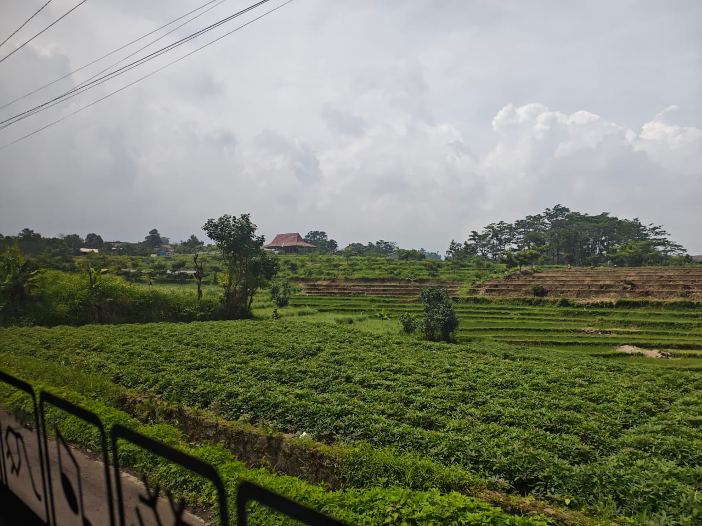
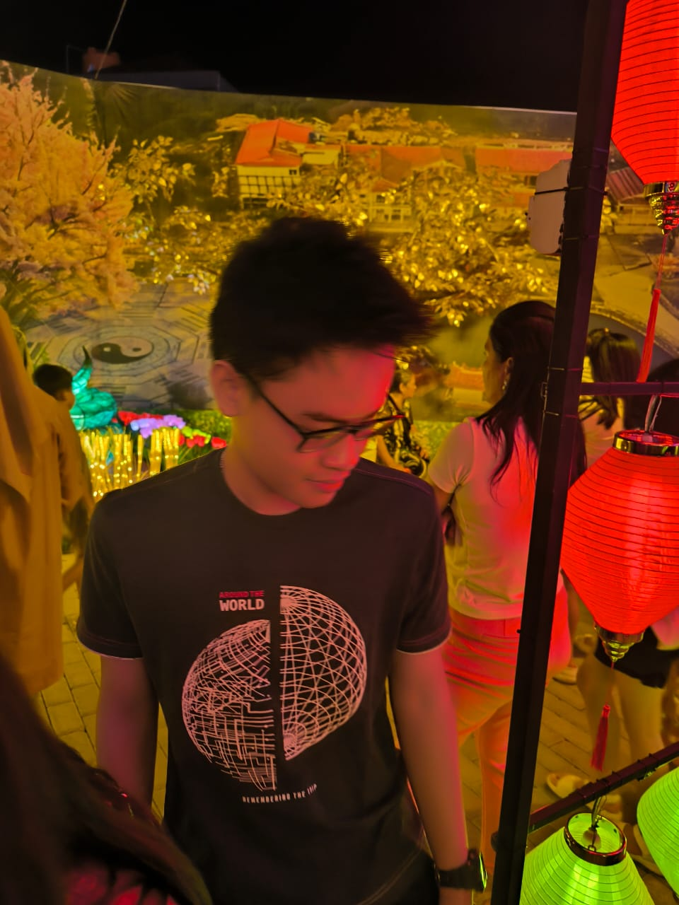

Tugas & Project
Beberapa hasil tugas dan iseng-iseng pas lagi belajar

Tugas Pemrograman Java
Bikin sistem sederhana buat menuhin nilai praktikum

Project Web Portfolio
Latihan bikin web pakai HTML dan Tailwind CSS
Halo, kenalin aku Welly! Sekarang lagi sibuk kuliah jurusan Informatika di Universitas Ciputra. Tiap hari kerjaannya nugas, belajar ngoding, dan cari hiburan biar nggak stres.

Sebagian besar waktuku abis buat urusan kuliah dan nugas.
Lagi pusing-pusingnya belajar logika pemrograman dan konsep OOP pakai Java buat ngerjain tugas praktikum kampus.
Masih pemula, tapi lagi nyoba-nyoba bikin tampilan web pakai HTML dan Tailwind, ya contohnya kayak web tugas ini.
Ikut bantu-bantu jadi mahasiswa di kampus. Hitung-hitung nambah relasi dan belajar problem-solving bareng.
Tugas Praktikum
Tomoro Coffee & Ayam Geprek
Error Pas Nge-Run Code
Beberapa hasil tugas dan iseng-iseng pas lagi belajar
Bikin sistem sederhana buat menuhin nilai praktikum

Latihan bikin web pakai HTML dan Tailwind CSS
Kalau mau nanya-nanya soal tugas, diskusi materi kuliah, atau ngajak mabar santai, langsung kontak aja ya.
Hubungi Aku